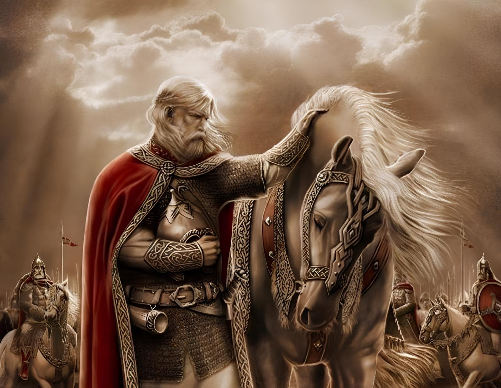

Песнь о Вещем Олеге
Александр Пушкин
Как ныне сбирается вещий Олег
Отмстить неразумным хозарам;
Их сёла и нивы за буйный набег
Обрёк он мечам и пожарам;
С дружиной своей, в цареградской броне,
Князь по полю едет на верном коне.
Из тёмного леса, навстречу ему,
Идёт вдохновенный кудесник,
Покорный Перуну старик одному,
Заветов грядущего вестник,
В мольбах и гаданьях проведший весь век.
И к мудрому старцу подъехал Олег.
“Скажи мне, кудесник, любимец богов,
Что сбудется в жизни со мною?
И скоро ль, на радость соседей-врагов,
Могильной засыплюсь землёю?
Открой мне всю правду, не бойся меня:
В награду любого возьмёшь ты коня”.
“Волхвы не боятся могучих владык,
А княжеский дар им не нужен;
Правдив и свободен их вещий язык
И с волей небесною дружен.
Грядущие годы таятся во мгле;
Но вижу твой жребий на светлом челе.
Запомни же ныне ты слово моё:
Воителю слава — отрада;
Победой прославлено имя твоё;
Твой щит на вратах Цареграда;
И волны и суша покорны тебе;
Завидует недруг столь дивной судьбе.
И синего моря обманчивый вал
В часы роковой непогоды,
И пращ, и стрела, и лукавый кинжал
Щадят победителя годы…
Под грозной бронёй ты не ведаешь ран;
Незримый хранитель могущему дан.
Твой конь не боится опасных трудов;
Он, чуя господскую волю,
То смирный стоит под стрелами врагов,
То мчится по бранному полю.
И холод и сеча ему ничего…
Но примешь ты смерть от коня своего”.
Олег усмехнулся — однако чело
И взор омрачилися думой.
В молчанье, рукой опершись на седло,
С коня он слезает угрюмый;
И верного друга прощальной рукой
И гладит и треплет по шее крутой.
“Прощай, мой товарищ, мой верный слуга,
Расстаться настало нам время;
Теперь отдыхай! уж не ступит нога
В твоё позлащённое стремя.
Прощай, утешайся — да помни меня.
Вы, отроки-други, возьмите коня,
Покройте попоной, мохнатым ковром,
В мой луг под уздцы отведите;
Купайте; кормите отборным зерном;
Водой ключевою поите”.
И отроки тотчас с конём отошли,
А князю другого коня подвели.
Пирует с дружиною вещий Олег
При звоне весёлом стакана.
И кудри их белы, как утренний снег
Над славной главою кургана…
Они поминают минувшие дни
И битвы, где вместе рубились они.
“А где мой товарищ? — промолвил Олег.-
Скажите, где конь мой ретивый?
Здоров ли? Всё так же ль легок его бег?
Всё тот же ль он бурный, игривый?”
И внемлет ответу: на холме крутом
Давно уж почил непробудным он сном.
Могучий Олег головою поник
И думает: “Что же гаданье?
Кудесник, ты лживый, безумный старик!
Презреть бы твоё предсказанье!
Мой конь и доныне носил бы меня”.
И хочет увидеть он кости коня.
Вот едет могучий Олег со двора,
С ним Игорь и старые гости,
И видят — на холме, у брега Днепра,
Лежат благородные кости;
Их моют дожди, засыпает их пыль,
И ветер волнует над ними ковыль.
Князь тихо на череп коня наступил
И молвил: “Спи, друг одинокий!
Твой старый хозяин тебя пережил:
На тризне, уже недалёкой,
Не ты под секирой ковыль обагришь
И жаркою кровью мой прах напоишь!
Так вот где таилась погибель моя!
Мне смертию кость угрожала!”
Из мёртвой главы гробовая змея
Шипя между тем выползала;
Как чёрная лента, вкруг ног обвилась,
И вскрикнул внезапно ужаленный князь.
Ковши круговые, запенясь, шипят
На тризне плачевной Олега;
Князь Игорь и Ольга на холме сидят;
Дружина пирует у брега;
Бойцы поминают минувшие дни
И битвы, где вместе рубились они.